Cómo un músculo se acorta, cómo mueve un hueso —y cómo mueve una piel, que es lo que hace la cara
Como siempre: responde con lo que ya tienes. No hay nota. Al final de la mañana volvemos sobre las cinco y verás cuántas contestas distinto.
Cuando un músculo se contrae, se acorta. Pero los filamentos que lleva dentro miden lo mismo antes y después. ¿Cómo puede acortarse algo cuyas piezas no se acortan?
El rigor mortis deja los músculos duros y contraídos horas después de la muerte. Si contraerse gasta energía y el cadáver no produce ninguna, ¿por qué se quedan agarrados?
Todos los músculos que hemos visto mueven huesos. Los de la cara mueven piel. ¿Qué tiene que cambiar en su inserción para que eso funcione?
Una persona con parálisis facial no puede cerrar un ojo. A las 48 horas le duele y ve borroso por ese ojo. ¿Qué se dañó, si el ojo estaba sano?
Dos músculos del mismo tamaño: uno con las fibras largas y paralelas, otro con fibras cortas y oblicuas. ¿Cuál levanta más peso? ¿Cuál mueve más lejos? ¿Por qué no puede ser el mismo?
En la clase de nivel tisular ya viste los cuatro tejidos básicos, y el muscular era uno. Hoy lo abrimos. Hay tres tipos, y conviene separarlos desde el principio porque se parecen menos de lo que sugiere el nombre común.
Estriado y de control voluntario. Mueve los huesos —y en la cara, la piel. Sus células son largas, multinucleadas, y se llaman fibras.
Estriado pero involuntario, y con automatismo propio. Solo está en la pared del corazón. Lo verás en la clase de circulatorio.
No estriado e involuntario. Paredes de vísceras y vasos, y también dentro del ojo: iris y cuerpo ciliar. De ahí que la pupila no obedezca.
El adjetivo «estriado» no es decorativo: describe lo que se ve al microscopio, y esa imagen es la consecuencia directa de cómo están ordenadas las proteínas por dentro. Cuando lleguemos al sarcómero, la estría dejará de ser un dato para convertirse en una explicación.
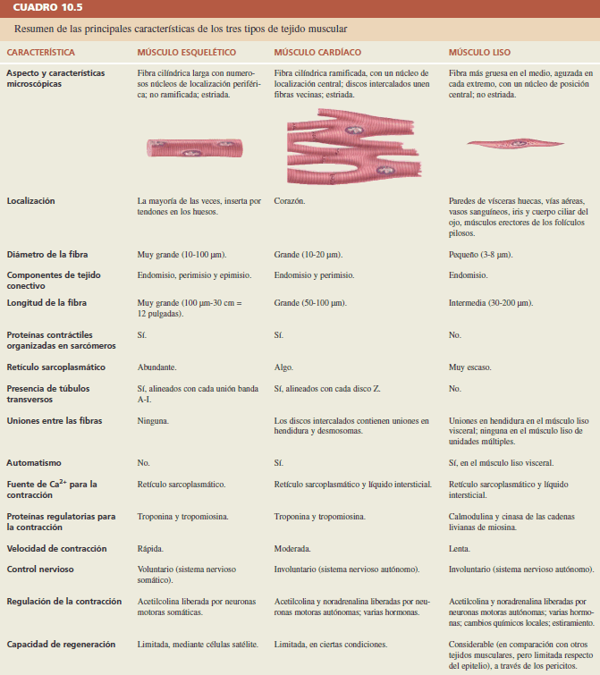
Antes de entrar en el detalle, conviene saber para qué sirve todo esto. Tortora enumera cuatro, y ninguna sobra:
1. El músculo del iris que contrae la pupila es de tipo liso. ¿Qué predice eso sobre tu examen en consulta?
Las cuatro se enuncian en dos líneas cada una, pero conviene no leerlas como una lista de vocabulario. Cada una es una capacidad distinta, y las lesiones las pierden por separado.
Responder a un estímulo produciendo un potencial de acción. La comparte con la neurona, y es lo primero que se pierde cuando falla la unión neuromuscular.
Generar tensión al ser estimulada. Ojo: tensión, no necesariamente acortamiento — sostener un libro quieto es contracción sin movimiento.
Dejarse estirar sin romperse. Un músculo relajado se alarga cuando su antagonista tira del otro lado.
Volver a su longitud de reposo tras estirarse o contraerse. Es lo que aporta la titina, la proteína que veremos en la estación 06.
2. Sostienes un libro con el brazo quieto durante un minuto. ¿Qué propiedad estás usando, y qué NO estás haciendo?
Un músculo no es un bloque de células: es un manojo de manojos. Tres capas de tejido conectivo lo organizan, y las tres se continúan al final en el tendón. Ese detalle —que la vaina se convierte en tendón— es lo que explica cómo la fuerza llega al hueso.
epi-, sobre. Envuelve el músculo entero. Es la capa más externa, de conectivo denso irregular.
peri-, alrededor. Rodea grupos de 10 a 100 o más fibras y los separa en fascículos. Son los haces que se ven a simple vista en un corte de carne.
endo-, dentro. Entra en el fascículo y separa cada fibra de su vecina. Es casi todo fibras reticulares.
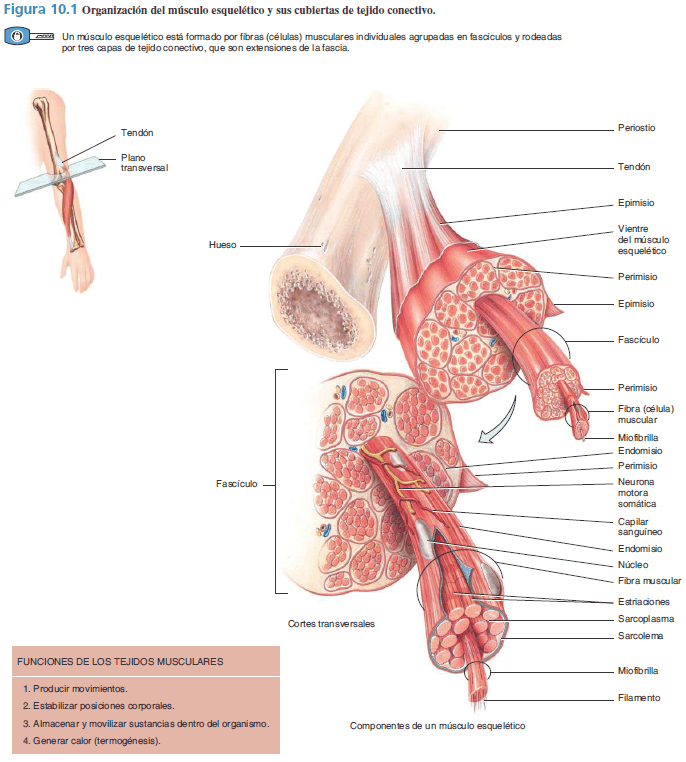
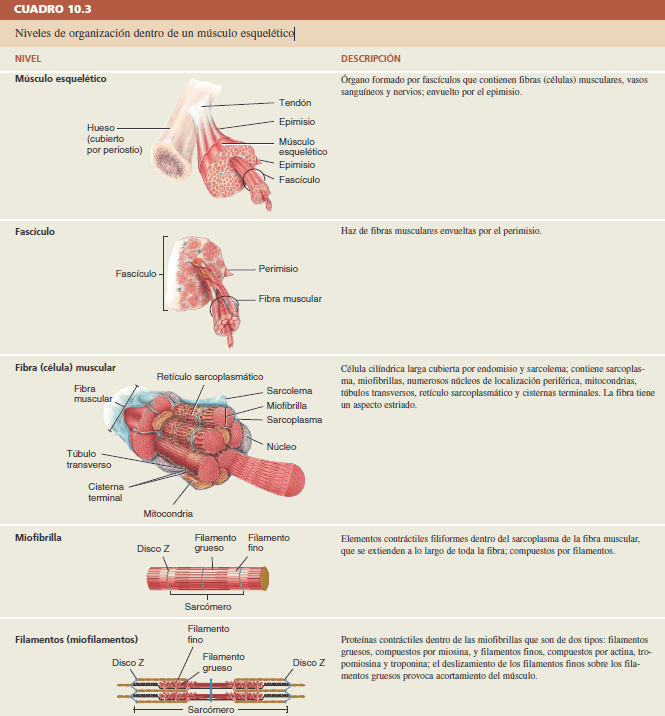
Cuando el conectivo se prolonga más allá del vientre muscular, puede hacerlo como un tendón —un cordón— o como una aponeurosis, una lámina ancha y plana. En la cabeza vas a encontrar la más famosa: la aponeurosis epicraneal o galea, que une el vientre frontal con el occipital sobre la bóveda del cráneo que viste la semana pasada.
3. Un cirujano describe una lesión que separó «los haces visibles» de un músculo sin dañar las fibras individuales. ¿Qué capa cedió?
Una fibra muscular esquelética es una célula, aunque cueste llamarla así: puede medir varios centímetros de largo y tiene muchos núcleos, empujados contra la periferia. Se forma por fusión de células precursoras, y de ahí los núcleos.
Cambia también el vocabulario, porque las estructuras habituales reciben nombres propios:
La membrana plasmática de la fibra. De él se hunden hacia dentro los túbulos T.
El citoplasma. Guarda glucógeno y mioglobina, la proteína que almacena oxígeno y da el color rojo.
El retículo liso de la fibra. Su única mercancía importante: Ca²⁺, almacenado y listo para soltarse.
Aquí hay un problema de ingeniería que conviene ver antes de nombrar las piezas. La orden de contraerse llega como un impulso eléctrico a la superficie de la fibra. Pero la fibra es gruesa, y las miofibrillas del centro están lejos de esa superficie. Si la señal tuviera que difundir hacia dentro, el centro se contraería tarde y el músculo tironearía de sí mismo.
La solución es meter la superficie hacia dentro. Los túbulos transversos o túbulos T son invaginaciones del sarcolema que atraviesan la fibra de lado a lado. A cada lado de un túbulo T, el retículo sarcoplásmico se dilata en cisternas terminales. Un túbulo T más sus dos cisternas es una tríada.
El potencial de acción viaja por el túbulo T hasta el interior, y allí ordena a las cisternas que suelten el calcio. Toda la fibra se entera a la vez. Esa es la razón de ser de la tríada, y explica por qué una fibra muscular se contrae como un bloque.
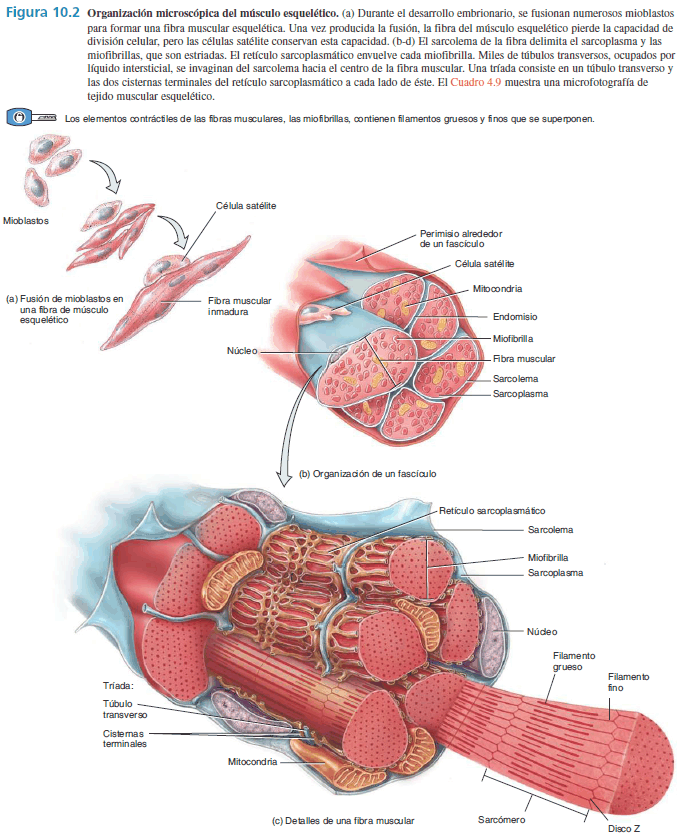
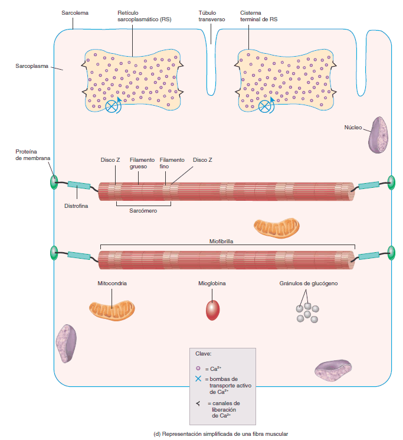
4. ¿Para qué sirve que los túbulos T sean una invaginación del sarcolema y no un orgánulo independiente?
Dentro de cada fibra hay miofibrillas, y dentro de cada miofibrilla, una cadena de sarcómeros puestos en fila. El sarcómero es la unidad funcional del músculo: la porción más pequeña que puede contraerse. Va de un disco Z al siguiente.
Las «estrías» que dan nombre al músculo estriado son estos sarcómeros alineados. Y sus bandas, que parecen un jeroglífico, son en realidad una descripción de qué filamentos hay en cada tramo:
Toda la longitud de los filamentos gruesos. Como los gruesos no cambian de longitud, la banda A tampoco. Recuérdalo: es la clave de la pregunta del examen.
Solo filamentos finos, sin gruesos. Es la zona clara, y el disco Z la cruza por el medio.
El centro de la banda A: solo gruesos, sin finos que se superpongan.
El disco Z delimita el sarcómero y ancla los filamentos finos. La línea M está en el centro y sostiene los gruesos.
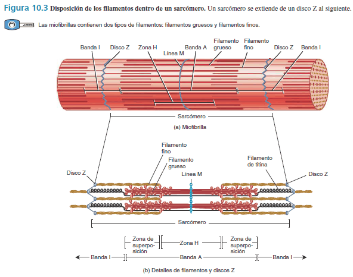
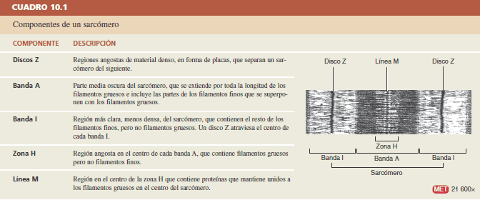
5. Al contraerse el músculo, ¿qué le pasa a la banda A?
Tortora agrupa las proteínas del sarcómero en tres oficios. La agrupación no es un capricho de clasificación: cada grupo falla de una manera distinta y produce una enfermedad distinta.
Miosina — el filamento grueso; sus cabezas son los puentes cruzados y
además son la ATPasa.
Actina — el filamento fino; lleva el sitio donde la cabeza se agarra.
Tropomiosina — tapa el sitio de unión mientras el músculo descansa.
Troponina — sujeta la tropomiosina en su sitio, y es
quien recibe el calcio.
Titina — el muelle: va del disco Z a la línea M y devuelve el sarcómero a
su longitud.
Distrofina — une la miofibrilla al sarcolema.
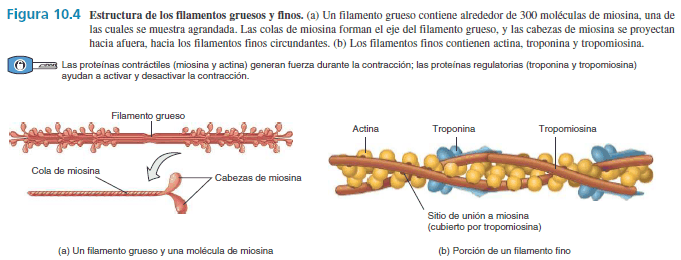
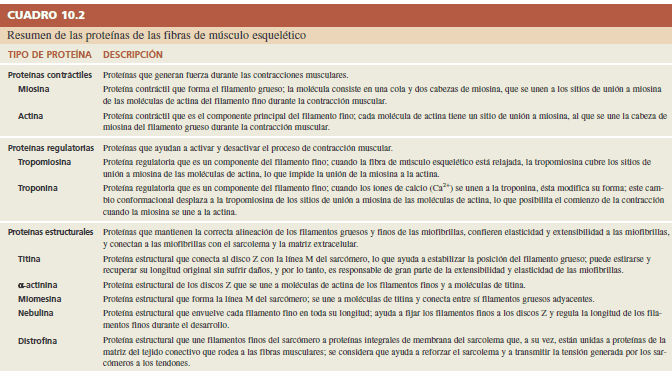
La distrofina parece un detalle estructural hasta que falta: su ausencia causa la distrofia muscular de Duchenne. Sin ella, cada contracción desgarra un poco el sarcolema y la fibra acaba muriendo. Es el ejemplo más claro de que las proteínas «que solo sostienen» no son accesorias — y de que en morfología, la estructura es la función.
6. En reposo, ¿qué impide que las cabezas de miosina se peguen a la actina?
Ésta era la pregunta 1 de la mañana, y la respuesta es más elegante que la intuición. Cuando en los años cincuenta se miraron las primeras microfotografías electrónicas, se esperaba encontrar filamentos plegados como un acordeón. Lo que se encontró fue que los filamentos medían lo mismo relajados y contraídos.
El músculo se acorta porque los filamentos se deslizan unos sobre otros. Los finos, anclados en los discos Z, son arrastrados hacia la línea M. Los discos Z se acercan entre sí. El sarcómero se acorta; sus piezas, no. Eso es el mecanismo de deslizamiento de los filamentos.
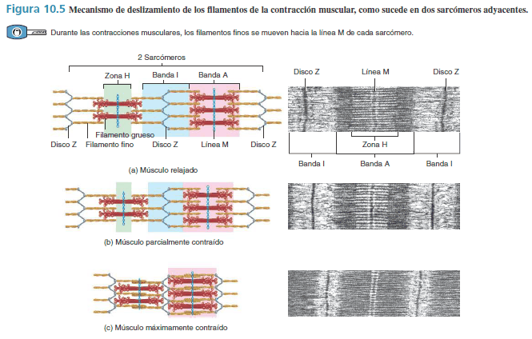
Un sarcómero que se acorta unas décimas de micra no impresiona. Pero hay miles en fila dentro de cada miofibrilla, y todos se acortan a la vez: los acortamientos se suman a lo largo de la cadena. Por eso una fibra puede acortarse en torno al 70 % de su longitud de reposo.
El deslizamiento no ocurre de un tirón: es el resultado de miles de cabezas de miosina repitiendo un ciclo de cuatro pasos, cada una a su ritmo, como manos tirando de una cuerda.
Aquí está la respuesta a la pregunta del cadáver. El ATP no hace falta solo para tirar: hace falta para soltarse. Sin ATP, las cabezas se quedan pegadas a la actina y el músculo se bloquea en contracción. Eso es el rigor mortis: no una contracción, sino la imposibilidad de terminarla.
El calcio no tira de nada. Su trabajo es abrir la puerta. El potencial de acción llega por el túbulo T, las cisternas terminales sueltan Ca²⁺ al sarcoplasma, el calcio se une a la troponina, la troponina arrastra a la tropomiosina y el sitio de la actina queda descubierto. El ciclo puede empezar.
Para relajarse, al revés: unas bombas devuelven el calcio al retículo gastando ATP, la tropomiosina vuelve a su sitio y las cabezas ya no encuentran dónde agarrarse. Relajarse también cuesta energía.
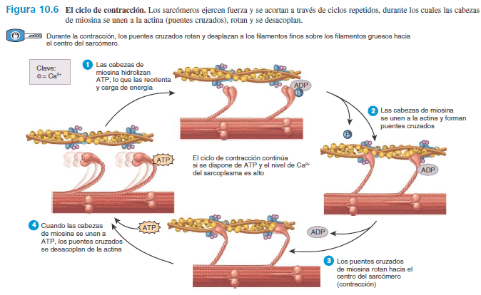
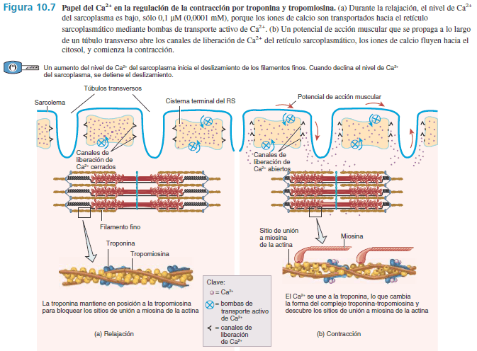
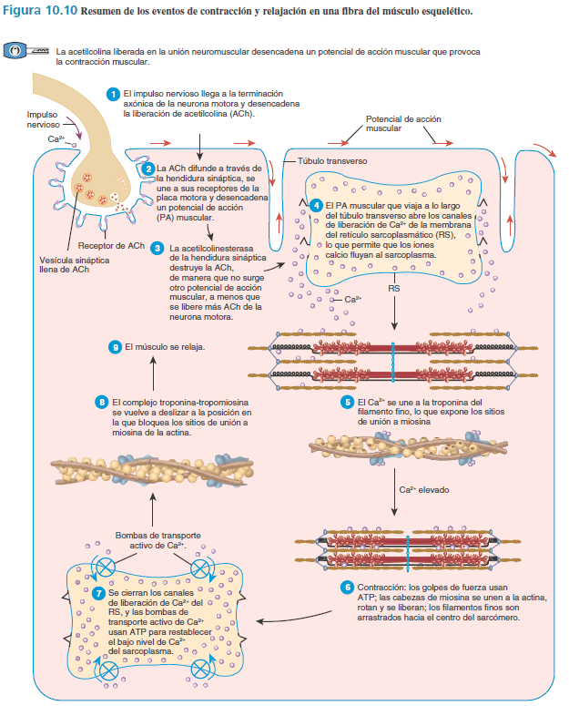
7. ¿Por qué el rigor mortis produce músculos rígidos y no flácidos?
8. Un fármaco impide que el retículo sarcoplásmico recapture el calcio. ¿Qué le pasa al músculo?
Todo lo anterior empieza en un solo sitio: la sinapsis entre una neurona motora somática y la fibra muscular. Tres piezas y un mensajero:
El extremo del axón, cargado de vesículas con acetilcolina (ACh).
El espacio entre los dos. La ACh lo cruza por difusión.
La región del sarcolema cargada de receptores colinérgicos.
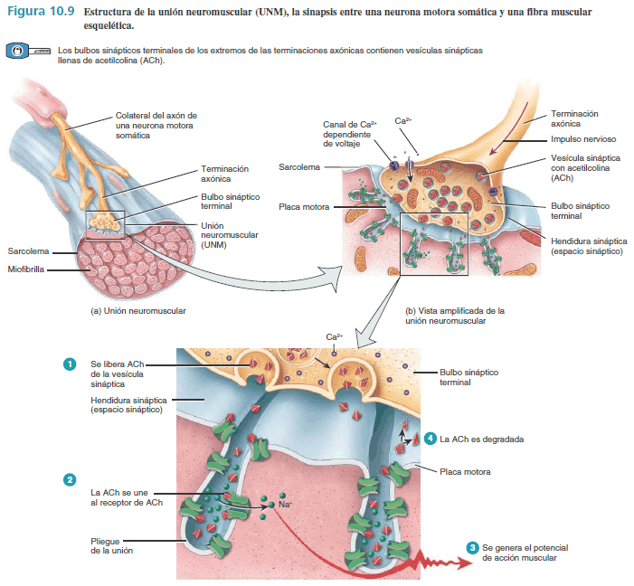
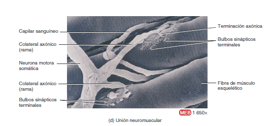
Esta sinapsis explica dos cuadros que vas a ver, y los dos empiezan por el ojo.
En la miastenia grave el sistema inmune destruye los receptores de ACh de la placa motora. La señal llega, pero encuentra menos puertas: el músculo se fatiga con el uso y se recupera con el reposo. Y como los músculos del ojo son los primeros en delatarlo, el motivo de consulta suele ser ptosis —el párpado que cae a lo largo del día— y diplopía que empeora al leer y mejora tras una siesta. Muchas veces el primero en sospecharla es el optómetra.
Del otro lado, la toxina botulínica impide la liberación de ACh. Aplicada a propósito, relaja el músculo que no debe contraerse: es el tratamiento del blefaroespasmo. El mismo mecanismo, usado al revés.
9. En la miastenia grave el paciente ve doble por la tarde y bien por la mañana. ¿Qué explica ese horario?
No todas las fibras esqueléticas son iguales. Se clasifican por cómo fabrican el ATP y por lo rápido que su ATPasa lo consume. Ningún músculo real es de un solo tipo: son mezclas, y la proporción cambia según el trabajo.
Diámetro pequeño, mucha mioglobina, muchas mitocondrias y capilares. Rojas. Resisten la fatiga: son las de la postura.
Intermedias, también rojizas. Rápidas y con resistencia moderada. Caminar, correr una distancia media.
Las más gruesas y potentes, blancas, con poca mioglobina. Mucha fuerza durante poco tiempo, y se fatigan pronto.
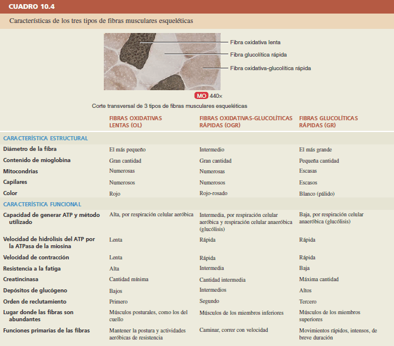
Los extraoculares —que veremos la semana que viene— son un caso extremo: de los músculos más rápidos del cuerpo, y de los más resistentes a la fatiga a la vez. Tienen que serlo. Hacen varios movimientos sacádicos por segundo, durante todas las horas que pasas despierto, sin descansar nunca.
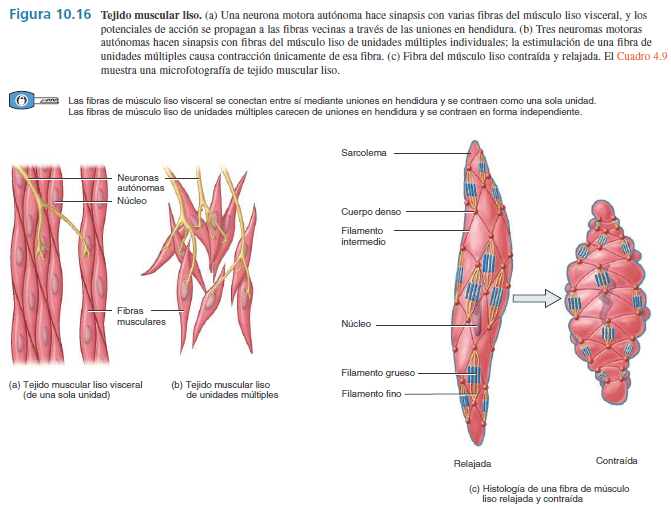
10. Un músculo de la postura, activo casi todo el día, ¿de qué tipo de fibra esperarías que fuera mayoritariamente, y de qué color?
Toca la tarjeta para voltearla. El español y el latín de la Terminologia Anatomica, y debajo por qué te importa a ti.
La célula del músculo esquelético: larga, cilíndrica y con muchos núcleos periféricos, porque nace de la fusión de varias células.
👁 «Fibra» aquí significa célula, no filamento. Es la confusión número uno.
Vaina de conectivo denso irregular que envuelve el músculo entero y se continúa en el tendón.
👁 epi- = sobre. El de fuera.
Vaina que agrupa de 10 a 100 o más fibras en fascículos. Son los haces visibles a simple vista.
👁 peri- = alrededor. El que hace los manojos.
Vaina de fibras reticulares que separa cada fibra muscular de su vecina dentro del fascículo.
👁 endo- = dentro. El más íntimo de los tres.
Haz de fibras musculares envuelto por perimisio. Su disposición decide si el músculo es potente o de gran recorrido.
👁 Es el nivel donde se decide fuerza contra amplitud.
La membrana plasmática de la fibra muscular. De ella nacen los túbulos transversos.
👁 Es donde vive la placa motora y por donde corre el potencial de acción.
El citoplasma de la fibra. Contiene glucógeno como combustible y mioglobina como reserva de oxígeno.
👁 La mioglobina es la que da el color rojo del músculo.
Red de sacos membranosos que almacena Ca²⁺ y lo libera desde sus cisternas terminales al llegar el estímulo.
👁 El almacén del calcio. Ni el túbulo T ni la mitocondria.
Invaginación del sarcolema que atraviesa la fibra y conduce el potencial de acción hasta el interior.
👁 Conduce, no almacena. Ésa es la diferencia con el retículo.
Un túbulo transverso con una cisterna terminal a cada lado. Es el punto donde la señal eléctrica se convierte en liberación de calcio.
👁 Tres piezas, un solo oficio: acoplar excitación y contracción.
Estructura cilíndrica dentro de la fibra, formada por sarcómeros en fila. Es la que produce las estriaciones.
👁 Un peldaño por debajo de la fibra, uno por encima del sarcómero.
La unidad funcional del músculo: el segmento entre dos discos Z consecutivos.
👁 Lo más pequeño que puede contraerse por sí solo.
Placa que delimita el sarcómero y ancla los extremos de los filamentos finos.
👁 Al contraerse, los discos Z se acercan entre sí. El sarcómero se acorta ahí.
Toda la longitud de los filamentos gruesos, incluida la zona donde se superponen con los finos.
👁 No cambia de longitud al contraerse. Es la pregunta clásica.
Zona clara con filamentos finos únicamente; el disco Z la atraviesa por el medio.
👁 Se estrecha al contraerse, porque se define por la ausencia de gruesos.
Proteína contráctil del filamento grueso. Sus cabezas forman los puentes cruzados y además hidrolizan el ATP.
👁 Es motor y enzima a la vez: tira y paga su propia energía.
Proteína contráctil del filamento fino; lleva el sitio de unión al que se engancha la cabeza de miosina.
👁 No se mueve sola: es arrastrada hacia la línea M.
Proteína regulatoria que sujeta la tropomiosina y que recibe el Ca²⁺, desencadenando el desbloqueo.
👁 El calcio se une AQUÍ, no a la actina.
Proteína regulatoria que en reposo cubre el sitio de unión de la actina e impide la contracción.
👁 El músculo en reposo está bloqueado, no apagado.
Proteína estructural elástica que va del disco Z a la línea M; devuelve el sarcómero a su longitud de reposo.
👁 Es la responsable de la elasticidad del músculo.
Sinapsis entre la neurona motora somática y la fibra muscular: bulbos terminales, hendidura y placa motora.
👁 Donde falla la miastenia grave y donde actúa la toxina botulínica.
Región del sarcolema frente al terminal axónico, cargada de receptores colinérgicos.
👁 Es el blanco de los anticuerpos en la miastenia.
Una neurona motora y todas las fibras musculares que inerva. Todas se contraen a la vez.
👁 Cuantas menos fibras por unidad, más fino el control. En los extraoculares son poquísimas.
Proteína del sarcoplasma que almacena oxígeno. Abundante en las fibras oxidativas lentas.
👁 Explica a la vez el color rojo y la resistencia a la fatiga.
Sin mirar arriba. Estas cinco no repiten las anteriores: piden reconstruir, no reconocer.
11. Ordena de mayor a menor: fascículo, miofibrilla, sarcómero, fibra muscular.
12. Un veneno bloquea los receptores de acetilcolina de la placa motora sin tocar nada más. ¿Qué observas?
13. Explica en una frase por qué la zona H desaparece en la contracción máxima pero la banda A no.
14. Señala la afirmación falsa sobre el ATP en la contracción.
15. Según el Cuadro 10.4, dos fibras se describen como «rápidas». ¿Qué comparten exactamente y en qué se separan?
Cambiamos de escala. Toda la mañana estuvimos dentro de la fibra; ahora salimos y miramos el músculo como una máquina montada sobre el esqueleto.
Un músculo tira de sus dos extremos por igual —la física no distingue—, pero los dos huesos no se mueven igual, porque otros músculos estabilizan uno de ellos. De ahí los tres términos:
La fijación al hueso que permanece quieto. Suele ser el proximal.
La fijación al hueso que se mueve. Suele ser el distal — y en la cara, suele ser la piel.
La porción carnosa entre los dos. Es donde están las fibras que se contraen.
Origen e inserción pueden intercambiarse según el movimiento. Al flexionar el codo, la mano sube hacia el hombro; si estás colgado de una barra, el mismo músculo sube el hombro hacia la mano. Lo que decide cuál es cuál no es la anatomía, es qué extremo está fijado en ese momento.
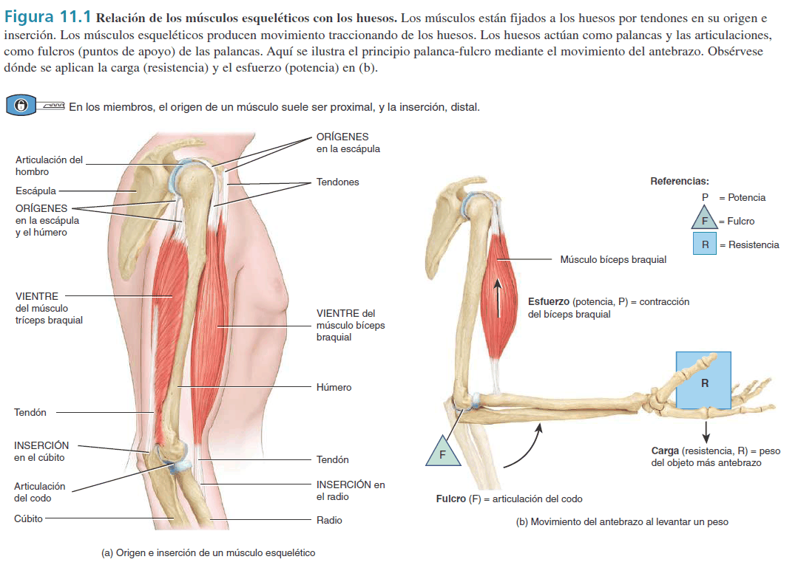
1. ¿Por qué la mayoría de los músculos cruzan al menos una articulación?
Hueso, articulación y músculo forman una palanca con sus tres elementos de siempre: el fulcro (la articulación), el esfuerzo (la contracción) y la carga (el peso a mover). Lo que cambia entre los tres tipos es el orden en que están.
El fulcro en el medio. Como un balancín. Ejemplo: la cabeza sobre la columna, sostenida por los músculos de la nuca.
La carga en el medio. Como una carretilla. Favorece la fuerza. Ejemplo: ponerse de puntillas.
El esfuerzo en el medio. Es la más común del cuerpo. Favorece la velocidad y la amplitud, no la fuerza. Ejemplo: el bíceps flexionando el codo.
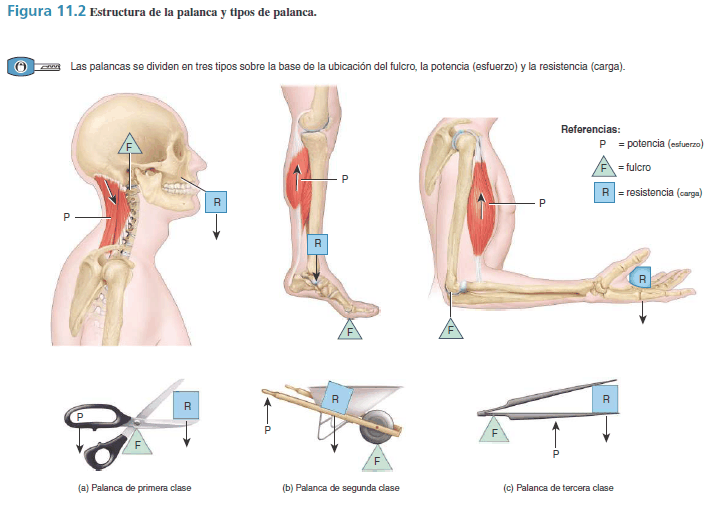
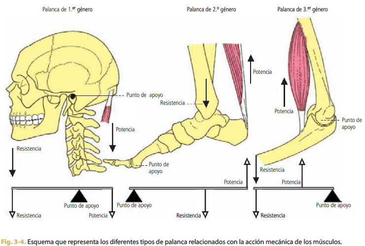
Que el cuerpo esté lleno de palancas de tercera clase parece un mal diseño: se pierde fuerza. Pero se gana lo otro — un pequeño acortamiento del músculo produce un recorrido grande y rápido del extremo. El cuerpo prefiere casi siempre la velocidad y la amplitud a la potencia bruta.
Ésta era la pregunta 5 de la mañana. Dentro de un fascículo las fibras siempre van paralelas; lo que cambia es cómo se disponen los fascículos respecto al tendón. Tortora describe cinco patrones: paralelo, fusiforme, circular, triangular y peniforme.
Y la disposición no es decorativa, porque hay dos reglas que tiran en direcciones opuestas:
Una fibra se acorta alrededor del 70 % de su longitud de reposo. Fibras largas → más recorrido.
La fuerza no depende de la longitud, sino del área transversal total: cuantas más fibras por sección, más fuerza. Una fibra corta tira tan fuerte como una larga.
De ahí que un músculo peniforme —fibras cortas y oblicuas, como las barbas de una pluma— quepa muchas más fibras en el mismo volumen: es potente pero de recorrido corto. Y un músculo paralelo, con fibras largas, recorre mucho pero con menos fuerza. La disposición fascicular es siempre un compromiso.
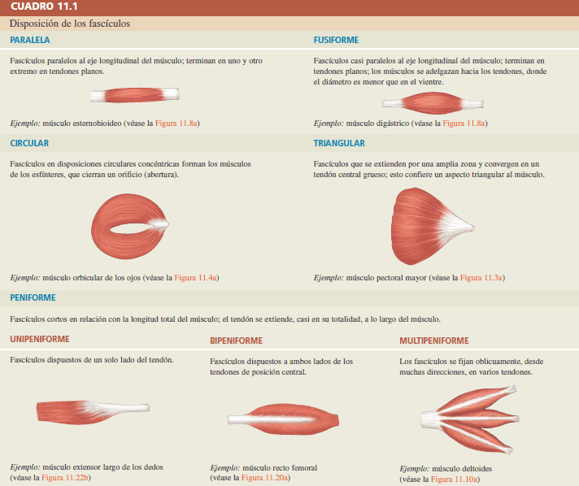
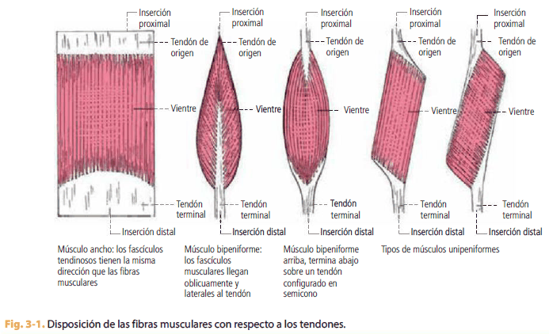
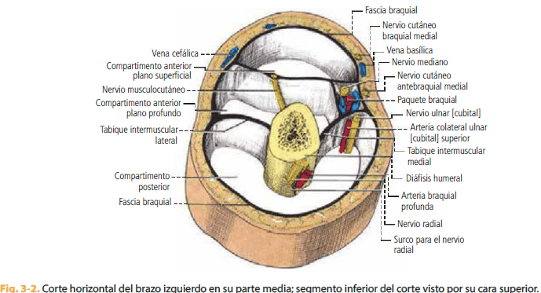
2. Dos músculos ocupan el mismo volumen. Uno es peniforme, el otro paralelo. ¿Qué es cierto?
Hay más de seiscientos músculos y nadie los memoriza uno a uno. No hace falta: los nombres están construidos con criterios, y quien conoce los criterios deduce gran parte de la información.
Recto (paralelas a la línea media), oblicuo, transverso.
Mayor y menor, largo y corto, máximo.
Deltoides (triangular), trapecio, orbicular (circular), digástrico (dos vientres).
Flexor, extensor, elevador, depresor, constrictor.
Bíceps (dos cabezas), tríceps, cuádriceps.
Temporal, frontal; o los dos extremos, como esternocleidomastoideo.
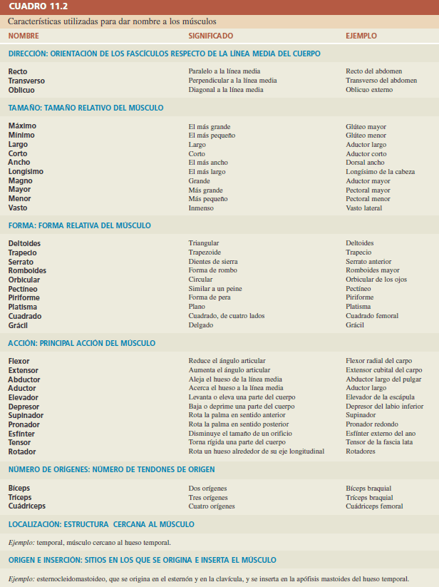
Prueba el método con un nombre que ya conoces: elevador del párpado superior. Acción —eleva—, y estructura sobre la que actúa —el párpado superior—. Dos criterios y sabes exactamente qué hace sin haberlo estudiado. Ahora prueba con orbicular de los ojos: forma circular, y alrededor de los ojos. Si es circular y rodea un orificio, lo cierra.
3. Sin haberlo estudiado nunca: ¿qué hace el músculo depresor del ángulo de la boca?
Ningún músculo trabaja solo. Un movimiento cualquiera reparte cuatro papeles, y el mismo músculo cambia de papel según el movimiento —igual que el origen y la inserción se intercambiaban.
El que produce el movimiento con su contracción.
El que hace lo contrario. Se relaja de forma controlada mientras el agonista trabaja: si no cediera, no habría movimiento.
Ayuda al agonista y sobre todo evita los movimientos no deseados en articulaciones intermedias.
Estabiliza el origen para que el agonista tenga desde dónde tirar.
El antagonista no es el enemigo. Su relajación gradual es lo que hace que el movimiento sea suave y frenable en vez de un tirón. Cuando esa coordinación falla —por ejemplo en algunos trastornos del sistema nervioso— el movimiento se vuelve brusco aunque la fuerza sea normal.
Ésta era la pregunta 3 de la mañana, y la respuesta cabe en una frase: los músculos de la expresión facial se originan en el hueso o la fascia del cráneo y se insertan en la piel. Viven en la capa subcutánea. Al contraerse mueven la piel, no una articulación — y por eso hacen gestos en lugar de movimientos.
Es la excepción a la regla de la estación 00, y no es una rareza menor: toda la comunicación no verbal humana depende de ella.
Los más importantes para ti son los que rodean las aberturas de la cara, porque funcionan por parejas de sentido contrario:
Orbicular de los ojos cierra el ojo.
Orbicular de la boca cierra y frunce los labios.
Elevador del párpado superior abre el ojo.
Los cigomáticos, el risorio y los elevadores tiran de la
comisura.
Vale la pena fijar unos cuantos más, porque aparecen constantemente:
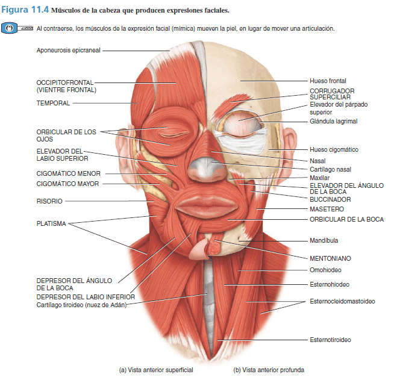
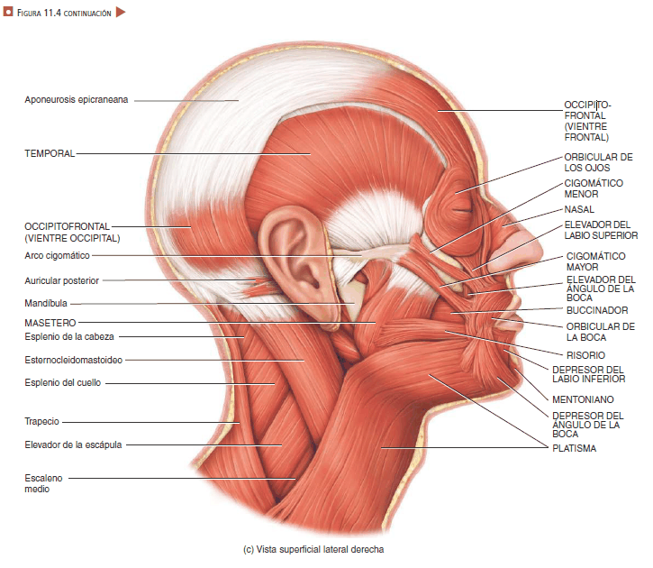
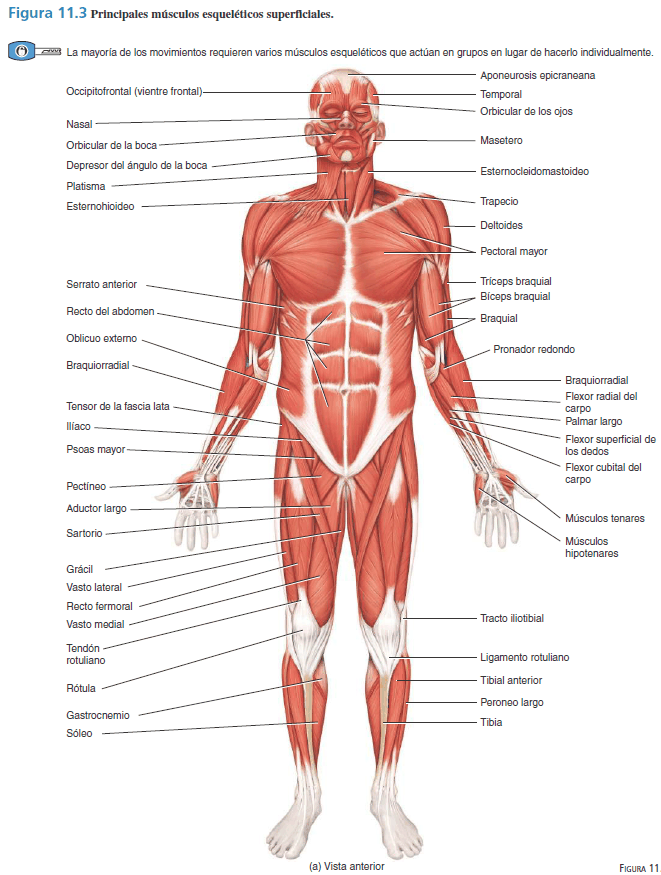
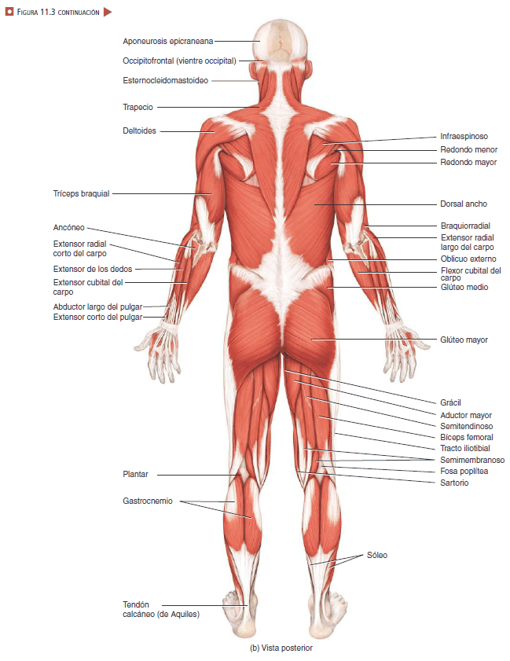
4. ¿Por qué los músculos de la expresión facial mueven la piel en lugar de mover una articulación?
De los cuarenta y tantos músculos de la cara, hay uno que vas a explorar en cada consulta de tu vida profesional. Conviene mirarlo despacio.
El orbicular de los ojos es el ejemplo de libro del músculo circular: sus fascículos forman anillos concéntricos alrededor de la órbita. Y como todo músculo circular que rodea un orificio, funciona como esfínter: lo cierra. Tiene dos porciones que hacen cosas distintas:
La del propio párpado. Cierra el ojo suavemente: es la del parpadeo espontáneo y la del sueño.
El anillo periférico, sobre el reborde óseo. Cierra con fuerza —apretar los ojos— y arruga la piel alrededor.
Su antagonista es el elevador del párpado superior, que abre el ojo. Y fíjate en un detalle que va a importar: los dos están inervados por nervios distintos. El orbicular, por el facial (VII); el elevador, por el oculomotor (III). Dos músculos antagonistas y dos nervios: por eso las lesiones dan cuadros opuestos y bien distinguibles.
Parpadeas del orden de 15 a 20 veces por minuto, y cada parpadeo hace tres cosas a la vez: reparte la película lagrimal sobre la córnea, arrastra los restos hacia el ángulo interno y bombea la lágrima hacia la vía lagrimal que viste la semana pasada.
La córnea es avascular —lo repasamos en el quiz— y se nutre en buena parte del oxígeno disuelto en la lágrima. Así que el orbicular de los ojos no es un músculo «de la expresión» para ti: es parte del sistema que mantiene viva la superficie ocular. Cuando el parpadeo falla —por parálisis, o simplemente porque baja la frecuencia frente a una pantalla— aparece el ojo seco.
5. Un paciente pasa ocho horas frente a la pantalla y refiere ardor y visión borrosa que mejora al parpadear. ¿Cuál es el mecanismo más probable?
Todos los músculos de la mímica dependen de un solo nervio: el facial (VII). Un único nervio para toda la expresión de media cara. Eso los hace eficientes y vulnerables.
Es la parálisis unilateral de los músculos de la expresión facial por daño o enfermedad del nervio facial. Tortora enumera las causas posibles: inflamación del nervio durante una infección del oído, cirugía ótica que lo lesiona, o infección por virus del herpes simple. En los casos graves cae todo ese lado de la cara: la persona no puede arrugar la frente, ni cerrar el ojo, ni fruncir los labios de ese lado, y puede haber babeo y dificultad para tragar. Alrededor del 80 % se recupera por completo en semanas o pocos meses.
Aquí está la respuesta a la pregunta 4 de la mañana. En una parálisis facial el paciente consulta por la asimetría de la cara, pero lo que corre peligro es el ojo.
Sin orbicular, el párpado no cierra: es el lagoftalmos. La córnea queda expuesta al aire, la lágrima se evapora, deja de repartirse con el parpadeo — y en 24 o 48 horas aparece una queratitis por exposición, que puede ulcerar y dejar cicatriz. Por eso, ante una parálisis facial, la protección corneal —lubricación, oclusión nocturna— es lo primero, antes que cualquier consideración estética.
Fíjate en la lógica completa: se dañó un nervio motor, el ojo estaba perfectamente sano, y el resultado es una lesión de la córnea. Nada de eso se entiende sin saber para qué sirve el parpadeo.
Como el orbicular y el elevador dependen de nervios diferentes, las lesiones son fáciles de separar si tienes la anatomía clara:
Falla el orbicular. El ojo no cierra — lagoftalmos. La hendidura queda demasiado abierta.
Falla el elevador del párpado. El ojo no abre — ptosis. El párpado cae.
6. Llega un paciente con el párpado superior caído que no logra levantar, y que sí cierra el ojo con normalidad. ¿Qué está fallando?
7. ¿Por qué en una parálisis facial hay que actuar sobre el ojo en las primeras horas, aunque el ojo esté sano?
Hoy vimos los músculos que mueven la piel de la cara y el que mueve el párpado. Quedan los que mueven el globo: cuatro rectos y dos oblicuos, alojados dentro de la órbita que estudiaste la semana pasada. Son la clase 8, y son el corazón anatómico de tu carrera.
Ve mirando esta lámina desde ahora. Fíjate en dos cosas que ya puedes entender con lo de hoy: todos los rectos comparten un mismo origen en el vértice de la órbita, y el elevador del párpado superior aparece aquí otra vez —porque pertenece a los dos grupos a la vez.
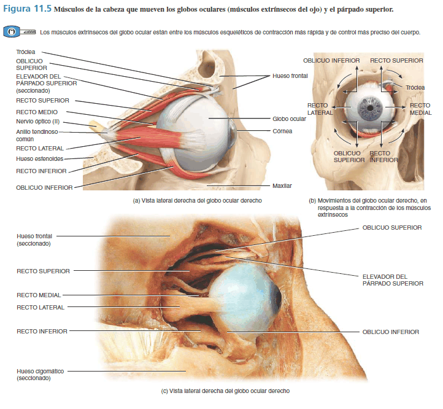
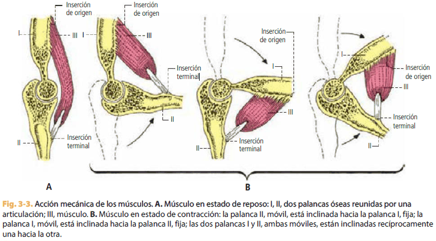
Fijación del músculo al hueso que permanece quieto durante el movimiento.
👁 No es fijo por naturaleza: depende de qué extremo esté estabilizado.
Fijación al hueso —o a la piel— que se desplaza cuando el músculo se contrae.
👁 En la cara la inserción es la dermis. De ahí que haga gestos.
Porción carnosa del músculo, entre el origen y la inserción.
👁 El occipitofrontal tiene dos, unidos por la galea.
Cordón de conectivo denso regular que continúa las tres vainas del músculo y transmite su fuerza al hueso.
👁 Es la prolongación del epimisio, el perimisio y el endomisio juntos.
Tendón en forma de lámina ancha y plana en lugar de cordón.
👁 La epicraneal (galea) une los dos vientres del occipitofrontal sobre la bóveda.
Motor primario: el músculo cuya contracción produce el movimiento.
👁 El papel cambia con el movimiento, no con el músculo.
El que produce el movimiento contrario y cede de forma controlada mientras el agonista trabaja.
👁 Su relajación gradual es lo que hace el gesto suave y frenable.
Fascículos cortos y oblicuos a lo largo del tendón, como las barbas de una pluma. Mucha fuerza, poco recorrido.
👁 Más fibras por área transversal = más fuerza.
Músculo circular cuyos fascículos rodean un orificio en anillos concéntricos y lo cierran.
👁 Circular + rodea un orificio = esfínter. Siempre.
Esfínter de la hendidura palpebral. Porción palpebral: parpadeo suave. Porción orbitaria: cierre forzado.
👁 Inervado por el facial (VII). Si falla → lagoftalmos.
Abre la hendidura palpebral elevando el párpado superior. Antagonista del orbicular.
👁 Inervado por el oculomotor (III). Si falla → ptosis.
Músculo de dos vientres —frontal y occipital— unidos por la aponeurosis epicraneal. El frontal eleva las cejas y arruga la frente.
👁 «No poder arrugar la frente» es un signo clásico de parálisis facial.
Aproxima las cejas y produce arrugas verticales en el entrecejo: el ceño fruncido.
👁 Su nombre lo dice: corruga el supercilio, la ceja.
Pared muscular de la mejilla. Comprime al soplar y mantiene el alimento entre los dientes al masticar. Lo atraviesa el conducto parotídeo.
👁 Del latín buccinator, el que toca la trompeta.
Esfínter que cierra y frunce los labios. El otro gran anillo de la cara.
👁 «No poder fruncir los labios» acompaña al lagoftalmos en la parálisis facial.
Par craneal que inerva todos los músculos de la expresión facial.
👁 Un solo nervio para media cara: eficiente y vulnerable. Es el de la parálisis de Bell.
Cinco más, y ninguna se contesta buscando arriba.
8. Un músculo circular rodea un orificio. Sin saber cuál es, ¿qué puedes afirmar de su acción?
9. ¿Qué tienen en común el orbicular de los ojos, el buccinador y el occipitofrontal, que NO comparte el masetero?
10. Un paciente no puede arrugar la frente ni cerrar el ojo del lado derecho, y babea por esa comisura. ¿Qué se lesionó y qué hay que vigilar?
11. ¿Cuál de estas afirmaciones sobre las palancas del cuerpo es falsa?
12. A patient with Bell's palsy cannot close the right eye. Which single statement best explains why this is an urgent problem for the cornea?
Las mismas de esta mañana. Léelas otra vez y comprueba cuántas contestas ahora con seguridad.
No se acortan: se deslizan. Los filamentos finos, anclados en los discos Z, son arrastrados hacia la línea M por las cabezas de miosina. El sarcómero se estrecha porque sus dos discos Z se acercan, no porque nada encoja. Se comprueba mirando la banda A, que mide siempre lo mismo, frente a la banda I y la zona H, que se estrechan. Miles de sarcómeros en fila suman sus acortamientos y la fibra se acorta hasta un 70 %.
Porque el ATP no hace falta solo para tirar: hace falta para soltarse. La separación de la cabeza de miosina de la actina exige una molécula nueva de ATP. Sin producción de ATP las cabezas quedan enganchadas y el músculo se bloquea en contracción. Y se suma un segundo efecto: las bombas que devuelven el calcio al retículo también gastan ATP, así que el calcio se queda fuera y el sitio de la actina, descubierto.
La inserción. Los músculos de la expresión facial nacen del hueso o la fascia del cráneo pero terminan en la dermis, dentro de la capa subcutánea. Al contraerse arrastran la piel, y por eso producen gestos en lugar de movimientos articulares. Es la excepción a la regla de que un músculo debe cruzar una articulación para moverla — no cruzan ninguna porque no mueven ninguna.
El nervio facial (VII), que inerva el orbicular de los ojos. Sin orbicular no hay cierre palpebral: es el lagoftalmos. Y sin parpadeo la película lagrimal ni se reparte ni se renueva, así que la córnea —que es avascular y se nutre en buena parte de la lágrima— se deseca y desarrolla una queratitis por exposición en 24 o 48 horas. Se lesionó un nervio motor y el resultado es una lesión corneal: por eso ante una parálisis facial lo primero es proteger el ojo.
Porque dependen de cosas distintas y enfrentadas. El recorrido depende de la longitud de las fibras —cada una se acorta cerca del 70 % de su longitud de reposo—. La fuerza no depende de la longitud sino del área transversal total: cuantas más fibras por sección, más fuerza. En un volumen dado no puedes tener a la vez fibras muy largas y muchísimas fibras. El peniforme elige fuerza; el paralelo, recorrido. La disposición fascicular es siempre un compromiso.
Lo que hay que llevarse de hoy. Un músculo se acorta porque sus filamentos se deslizan, y para eso hace falta calcio que destape y ATP que enganche y suelte. Ese mecanismo microscópico se convierte en movimiento gracias a una arquitectura —vainas, fascículos, tendones, palancas— cuya forma anuncia su función. Y en la cara ese mismo diseño se usa para algo distinto: mover piel. De ahí que un nervio motor dañado pueda acabar en una úlcera de córnea.